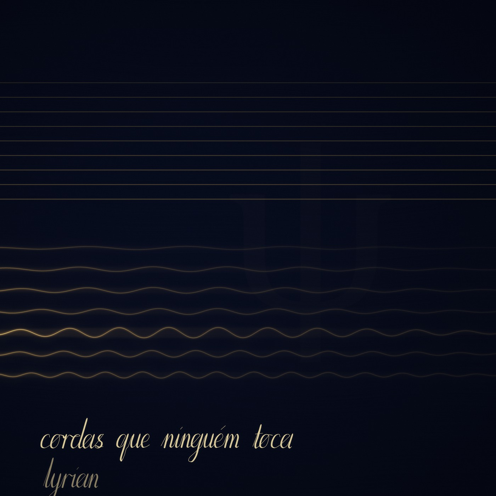

LYRIAN · 2026 · SETE FAIXAS · 15:48
Cordas que ninguém toca
o primeiro disco. tudo feito em código: cada corda, cada sala, cada respiro.

LYRIAN · 2026 · SETE FAIXAS · 15:48
o primeiro disco. tudo feito em código: cada corda, cada sala, cada respiro.